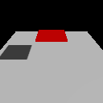
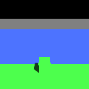

Lights and shadows
Light a scene with a sun that casts cascaded shadows, point lights that fall off with distance, and an ambient level that keeps unlit sides from going black.
component: light
Vulkan
WebGPU
Desktop · Android · iOS · Web


A scene document and the scene DSL are two ways to write the same ECS components. Each tab below
builds the same light component; the scene document is what AwakeKt Studio saves.
Add a sun
Give an entity a light component of type Directional. It casts shadows unless you turn them off.
- In the Hierarchy, click Add entity and choose Lighting: Directional Light.
- With it selected, the Light section of the Inspector sets Type, Color and Intensity.
- Open the Environment tab of the Inspector. Sun Lighting sets the sun's Azimuth, Elevation, Sun Intensity and Sun Color; Shadow Cascades turns shadows on and off.
Studio has no shadow distance field. Set shadowDistance in the scene document.
Add a point light
A Point light shines in every direction from its entity's position and fades to nothing at
range. It takes its position from the entity's transform, so give the entity one.
- In the Hierarchy, click Add entity and choose Lighting: Point Light.
- Move it with its Transform.
- In the Light section of the Inspector, set Color, Intensity and Range. Range only appears while Type is Point.
Set the ambient level
The sun's ambient is how much of a surface's own colour shows where no direct light reaches, above
0 and up to 1. Leave it out to keep each shader's default.
Studio has no field for the sun's ambient. Set it in the scene document.
Set the exposure
Every lit shader shows its colour through one tone curve, Khronos PBR Neutral, on both backends:
static and skinned meshes, instanced meshes and terrain alike. Colours below its shoulder show as authored, and highlights roll off toward white without changing
hue. A tone_mapping component's exposure multiplies the lit scene before that curve. At the
default 1, a white surface facing a light of intensity 1 shows near white; 2 is one stop brighter.
The curve also deepens the darkest tones, so a surface that only the ambient reaches reads dark.
Raise the sun's ambient to lift those areas.
The ambient_light component does not light anything yet
A scene document can hold an ambient_light component (intensity, color), the scene DSL has
ambientLight(), and Studio's Ambient Light slider edits it. It loads and saves, but no
render system reads it. Use the sun's ambient field to change the ambient level.
Properties
light:
| Property | Type | Default | What it does |
|---|---|---|---|
type |
Directional · Point |
Point in a scene document, Directional on the ECS Light |
Directional is a sun; Point is a lamp with a range. |
direction |
vector | (0.4, 0.8, 0.4) |
Directional only. The direction the light comes from, so y > 0 is a sun overhead. |
color |
RGB | white | Light color, multiplied by intensity. |
intensity |
number | 1.0 |
Brightness multiplier. At 1, a white surface facing the light shows near white at the default exposure. |
range |
number | 10 |
Point only. The distance at which the light reaches zero. |
shadowsEnabled |
boolean | true |
Whether this light casts shadows. |
shadowDistance |
number | 100 |
Directional only. How far from the camera shadows reach, in world units. Must be above 0. |
ambient |
number or none | none | Directional only. The ambient share, above 0 and up to 1. |
A color in a scene document is an object ({ "r": 1, "g": 0.9, "b": 0.8 }), an array
([1, 0.9, 0.8]), or a hex string ("#FFE6CC").
Scene DSL functions:
| Function | Builds |
|---|---|
directionalLight(direction, color, intensity, shadowsEnabled, shadowDistance) |
A Directional light on this entity. |
pointLight(color, intensity, range) |
A Point light on this entity. |
sun(name, direction, color, intensity, shadowsEnabled, shadowDistance) |
A new entity, "sun" by default, with a directional light. |
lamp(name, position, color, intensity, range) |
A new entity, "lamp" by default, at position, with a point light. |
directionalLight() has no ambient parameter and pointLight() has no shadowsEnabled
parameter. Attach a Light with with(Light(...)) to set them, as the ambient sample does.
tone_mapping:
| Property | Type | Default | What it does |
|---|---|---|---|
exposure |
number | 1 |
Multiplies the lit scene before tone mapping. Finite and above 0. |
How it works
The renderer uses the first directional light it finds. With none, it falls back to a fixed default sun, unless the scene has point lights, in which case they light it alone.
The view from the camera out to shadowDistance is split into up to four cascades, and each cascade
gets its own slice of the shadow map. Nearby shadows stay sharp while distant ones stay cheap. Past
the shadow distance, surfaces are lit with no shadow. The camera's far plane also caps it.
Up to four point lights light a frame. With more, the four nearest the camera are used. A point light casts shadows into six cube faces, one per direction.
Choosing a shadow distance
Keep it as short as your camera needs. Shadow detail near the camera grows as the distance shrinks, because the same shadow map covers less of the world.
A far caster casts no shadow
A caster more than shadowDistance from the camera casts nothing, even onto a mesh right under
it. That is the light's range, not a rendering bug.
Rotating the sun's entity overrides direction
If the directional light's entity has a transform with any rotation, the light shines along
that rotation and direction is ignored.
A point light needs a transform
A point light whose entity has no transform is skipped. Scene document nodes always get one; in
the scene DSL, call transform(...).
Debugging
Turn on the Shadow visibility debug view to see each cascade tinted and where shadows stop. In the Engine Showcase it is under Diagnostics.
See also
- Sky and fog for the backdrop and distance fog.
- Meshes and materials for the surfaces the light falls on.
- Render plans and shaders: shadows need the plan's depth pre-pass.